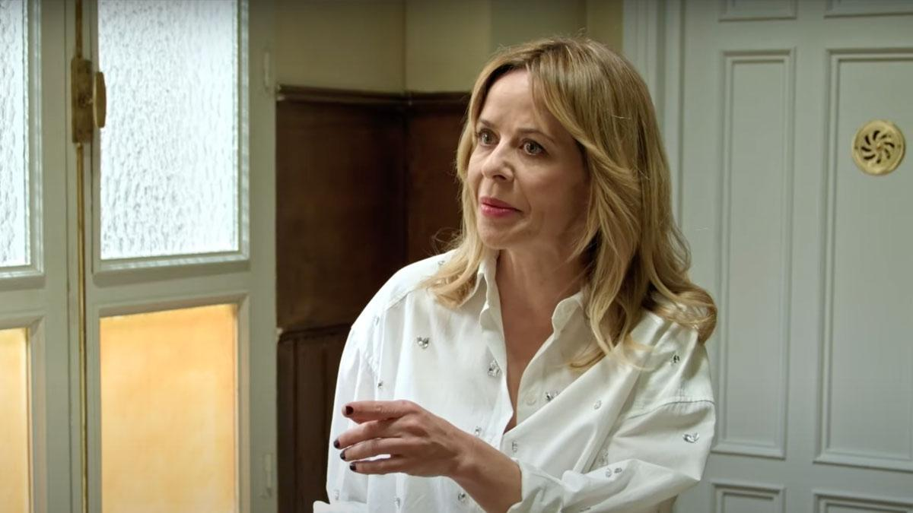

Nueva Temporada
Vuelven 8 episodios nuevos con esta decimoquinta temporada que no se quedarán atrás con nuevos regresos y caras nuevas.

Regreso de Rebeca
Vuelve la cara conocida de la abogada "Rebeca Ortiz" también conocida como "La picapleitos" que pudimos ver anteriormente en las temporadas 7 y 8 de "La que se avecina"
Gran perdida
En esta nueva temporada nos tendremos que despedir de uno de los personajes mas iconicos de la serie que lleva acompañandonos desde la primera temporada, "Vicente Maroto".